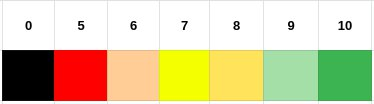
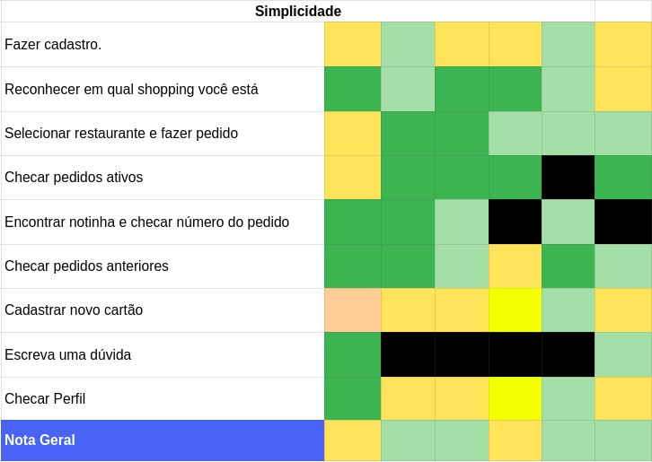
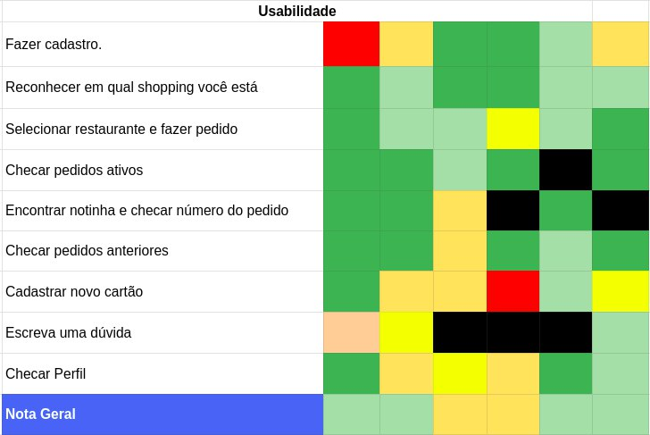
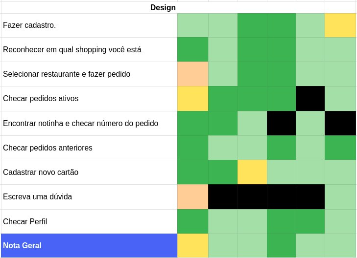

Análise
Análise V1
Para facilitar a visulização da avaliação dos testadores, foi feito um mapa de cores para facilitar a identificação de possíveis problemas na aplicação, a escala é a seguinte:

A nota 0 foi utilizada pra representar tarefas que não foram realizadas, seja por falta de entendimento da tarefa ou por conta de dificuldade em se realizar a tarefa.
As notas de 1 a 5 estão representadas em vermelho, por serem possíveis riscos da aplicação, necessitando alterações.
Simplicidade

Os principais pontos de destaque em relação à aplicação estão relacionadas às etapas de Fazer cadastro e Cadastrar Cartão. Notou-se que a etapa de cadastro era muito extensa e que a aba para cadastro de cartões era difícil de ser encontrado.
Além disso houve uma certa dificuldade em se entender as etapas de Encontrar notinha e de se Escrever uma dúvida, pois na etapa da aplicação em que se pedia para encontrar a notinha, não era uma nota fiscal e sim um cartão de informações do pedido e em relação a Escrever uma dúvida, a aplicação não fornece a opção de se escrever uma dúvida, apenas de ler dúvidas já cadastradas.
Usabilidade

Os pontos de destaque relacionados à Usabilidade estão em Fazer Cadastro, Cadastrar Novo Cartão e Checar Perfil. Na etapa de cadastro os testadores demonstraram não querer adicionar suas informações sobre o cartão na etapa de cadastro. Já a etapa de cadastro de cartão dentro do app apresentou as mesmas reclamações evidenciadas no tópico de simplicidade, houve dificuldade para se encontrar essa parte do app. A etapa de Checar Perfil apresenta o mesmo problema, dificuldade de acesso.
Design

A aplicação foi muito elogiada em relação ao design e alguns aspectos de layout já foram evidenciados pelos outros tópicos da análise.
Sugestões
- não mostrar todas as dúvidas logo de cara na sessão de dúvidas
- Colocar foto ou logo do shopping
- deixar mais claro onde deixar a dúvida
- no perfil o “atualizar” poderia ser mais chamativo ou deixar em baixo na tela
- Tá muito lindo. Alguns botões ainda não estão responsivos, como o de realizar login e o de finalizar cadastro de cartão de crédito. O fluxo está bom, mas em algumas situações poderia ser mais simples, como por exemplo quando o usuário tenta checar o perfil e precisa passar por configurações antes.
- Muito legal, se for utilizado bem pode ir pra frente.
- Sentiu falta de realizar avaliação de pedidos
- Semelhante a aplicativos já existentes, bem intuitivo. Cadastro de cartão falhou por não estar responsivo
- Difícil encontrar a parte de categorias, poderia ser um filtro na tela inicial
| - | Análise do teste de Usabilidade |
|---|---|
| Versão | Atual: 1.0 (11/09/19) Anterior: - |
| Descrição | Roteiro do teste de Usabilidade |
| Autor | Pedro Féo |